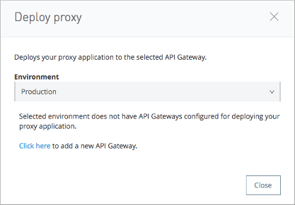
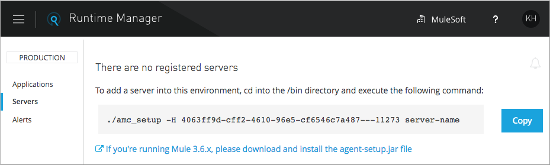

Proxy Deployment Reference
API Gateway, incorporated in Mule Runtime 3.8 and later, is the server that hosts a Mule proxy application. To deploy an API from API Manager, you typically create a proxy application that serves to stop attacks aimed at the actual server. This proxy application is sometimes called an auto-generated proxy.
After deploying an API, you can govern the API using policies. You can set API alerts to send a notification about conditions, such as an API returning a certain HTTP error code.
Deployment Prerequisites
You need to meet the following prerequisites, depending on the type of deployment:
General Prerequisites
-
Presence of an API version in API Manager
-
API Versions Owner permissions for the API, or membership in the Organization Administrators role
-
The URL of the server where the API is running
Deployment to your server
Access to a Mule 3.8.0 Runtime instance or an API Gateway instance that has been configured to pair with your organization. Configure the API Gateway if using versions of Mule earlier than 3.8.0.
Automatic deployment to your server
Valid permissions for the Runtime Manager and the API Manager of your organization. Also, the private server must be registered.
Automatic CloudHub deployment
Permissions for the Runtime Manager and API Manager of your organization.
Manual CloudHub deployment
An Anypoint Platform account and an Anypoint Platform client ID and client secret to pair the deployment with an organization.
You need valid permissions for the Runtime Manager and API Manager of your organization to deploy a proxy.
To Deploy a Proxy to CloudHub
In the API Status section of the API version page, click Deploy proxy to deploy the proxy. If you configured the proxy for deployment on CloudHub in the Configure Endpoint, then the proxy is deployed in CloudHub.
The status of the API deployment is indicated by the marker in the API Status section of the API version page. While the app is starting, a spinner appears. After the API starts successfully, the light turns green and Re-deploy Proxy appears. If you make changes to the configuration, re-deploy the proxy application to the same application on CloudHub.
To Deploy a Proxy To a Server
To manage the API behind this endpoint with SLAs and policies, API Manager needs to register the endpoint with the agent.
-
In the API Status section of the API version page, click Deploy proxy to deploy the proxy.
If you did not configure the proxy for deployment in CloudHub in the Configure Endpoint dialog, the Deploy Proxy dialog appears.
 -
Click
Click here.Runtime Manager deploys the proxy using the registered Gateway Runtime instance. If there are no registered servers, you are prompted to add one.
 -
Register your server in Runtime Manager.
To Deploy a Proxy to Pivotal Cloud Foundry
This modality is in Beta and only available with the Anypoint Platform Private Cloud Edition. To make this modality available, you must first install and configure the PCF Tile.
Also, the API’s backend application needs to be deployed on the PCF platform before you can run the command that executes the deployment.
Currently, this modality is only available on the command line. To instruct PCF to create and deploy a proxy, you must run the command cf bind-route-service. This command must include the following arguments:
| Property | Description |
|---|---|
Domain name |
Domain where you want to host your proxy application |
service instance name |
Refers to the proxy service, which is different from the service used when deploying Mule applications to PCF. You might have multiple instances of this proxy service, as you’d have one per every organization and environment you own. |
|
(optional) Force command to avoid any message prompts. |
|
The host name under which your proxy app is deployed. If |
|
Reference to a .JSON file that contains more information. Its required structure is explained below. |
Your command should look like this:
$ cf bind-route-service apps.pcf.mulesoft.com api_gateway_service --hostname myapp -c input.jsonParameters File
One of your properties should be a link to a .JSON parameters file. This file should include the following information:
| Parameter | Description |
|---|---|
|
The Anypoint Platform organization in which to deploy the proxy application |
|
The Runtime Manager environment in which to deploy the proxy application |
|
The name with which you want your proxy application to be registered on Runtime Manager. It will also register an API on API Manager under this same name. You will also see the proxy listed under this name if you execute the command |
|
The host name under which your proxy app is deployed. If |
'domain` |
The domain name where you want to host your application. It should match the domain that you provided as properties on the command. |
|
Mule Runtime version with which to run the deployment of the proxy |
|
The name of the PCF service that you registered in the Space configuration tool |
|
(optional) In case you want your proxy to be deployed on multiple PCF instances. |
Your file should hence resemble the following example:
{
"orgId": "e2ccc210-95a3-4740-b9cf-1f2d9e693168",
"envId": "26ad04b9-422c-45f2-8ee0-caeb73e6c9a9",
"appName": "proxyApp",
"hostname": "myapp",
"muleRuntimeVersion": "3.8.1",
"anypointServiceName": "runtime-manager-service",
"domain":"apps.pcf.mulesoft.com"
}To Deploy a Proxy to API Gateway 2.x
To deploy a proxy to API Gateway 2.x, you can download a current or legacy API Gateway Runtime in ZIP file format. Click API Status > Download proxy.
-
If needed, modify the downloaded zip file to adjust for port conflicts, use shared connector resources, or include custom code for logic that you want to add to the proxy.
-
Deploy the proxy application.
After deployment, the yellow circle in the status indicator turns green.
Using HTTPS
When deploying to the CloudHub, you can perform an automatic deployment only if you use an HTTP listener that doesn’t enable HTTPS. If you use HTTPS, add your HTTPS credentials and then perform a manual deployment to CloudHub or deploy on premises.
HTTPS can be applied in the following ways:
-
Between the proxy and the client app (1)
-
Between the proxy and the API (2)
The way you apply HTTPS and deploy the proxy determines the method you use for setting up the proxy. The following sections describe these methods.
HTTPS with the Client App - On Premises
-
In the Configure Endpoint menu, select HTTPS as a scheme on the dropdown menu.
-
The generated proxy has an inbound HTTP Listener connector that references an alternative HTTP Listener Configuration element in a domain, if you use a domain, that uses HTTPS. This configuration element exists in the default Domain file in the API Gateway, but it’s commented out.
-
In the API Gateway folder, open the file
domains/api-gateway/mule-domain-config.xml. It should look like this:<mule-domain xmlns="http://www.mulesoft.org/schema/mule/ee/domain" xmlns:xsi="http://www.w3.org/2001/XMLSchema-instance" xmlns:http="http://www.mulesoft.org/schema/mule/http" xmlns:tls="http://www.mulesoft.org/schema/mule/tls" xsi:schemaLocation="http://www.mulesoft.org/schema/mule/ee/domain http://www.mulesoft.org/schema/mule/ee/domain/current/mule-domain-ee.xsd http://www.mulesoft.org/schema/mule/http http://www.mulesoft.org/schema/mule/http/current/mule-http.xsd http://www.mulesoft.org/schema/mule/tls http://www.mulesoft.org/schema/mule/tls/current/mule-tls.xsd"> <http:listener-config name="http-lc-0.0.0.0-8081" host="0.0.0.0" port="8081" protocol="HTTP"/> <!-- <http:listener-config name="https-lc-0.0.0.0-8082" host="0.0.0.0" port="8082" protocol="HTTPS"> <tls:context name="tls-context-config"> <tls:key-store path="[replace_with_path_to_keystore_file]" password="[replace_with_store_password]" keyPassword="[replace_with_key_password]"/> </tls:context> </http:listener-config> --> </mule-domain> -
Uncomment the HTTP
http:listener-configelement namedhttps-lc-0.0.0.0-8082 -
Fill in the keystore fields in that element with your specific keystore data. Your proxy is ready to deploy.
-
HTTPS with the Client App - On CloudHub
-
In the Configure Endpoint dialog, select HTTPS as a scheme on the dropdown menu.
-
Download the proxy and modify it to include an HTTPS Configuration element with HTTPS credentials.
-
Include the following lines of code into your proxy’s
proxy.xmlfile, include this outside any of the flows:<http:listener-config name="https-lc-0.0.0.0-8082" host="0.0.0.0" port="8082" protocol="HTTPS"> <tls:context name="tls-context-config"> <tls:key-store path="[replace_with_path_to_keystore_file]" password="[replace_with_store_password]" keyPassword="[replace_with_key_password]"/> </tls:context> </http:listener-config>Replace the placeholders with the actual path and passwords of the keystore.
-
Verify that the
http:listenerelement in the flow is correctly referencing this new configuration element you just added.config-ref="https-lc-0.0.0.0-8082"
HTTPS with the API
-
In the Configure Endpoint menu, provide an implementation URI to an HTTPS address. Specifying an HTTPS address modifies the proxy to support HTTPS. By default, the proxy signs requests using the default HTTPS credentials of the JVM.
-
If you want to include other HTTPS credentials, download the proxy and modify it accordingly.
If you plan to import your proxy application into Studio 6.x or later, you can choose in API Manager whether to link the application to a domain or not. When importing your proxy application into Studio 5.x, your project is linked to a domain project named
api-gateway, which is automatically created in studio if not already present. This domain project is identical to the domain that exists in CloudHub and in your default API Gateway On-Premises. It’s necessary for being able to deploy your app to the Anypoint Studio server under the same conditions as those present when you deploy the app to production. If you modify your domain on the On-Premises installation to include HTTPS credentials, replicate those changes on the domain that exists in Studio to match deployment conditions. -
Modify the http:request-config element in the
proxy.xmlfile of the proxy to include TLS configuration elements that point to the required truststore/keystore.
To Modify a Proxy
In most cases, the proxy you generate in API Manager is suitable for deployment out of the box. However, you can modify the proxy to log data to a file or send data to a Splunk account with the Anypoint Splunk Connector, for example. To inspect or change a proxy application, import the proxy application in Anypoint Studio. You can modify the application to perform additional functionality, provided essential structures remain in place. This section shows skeletal XML examples of several types of proxy applications having the essential structures.
To inspect the essential structures of a proxy application:
-
After setting up a proxy using API Manager, in the Status area, click one of the Download proxy options.
-
In Studio, select File > Import.
-
In the Import dialog, expand the Mule node, and select Anypoint Studio Generated Deployable Archive (.zip). Click Next.
-
Navigate to a proxy zip file that you downloaded from API Manager.
-
Click Finish.
You can now edit the proxy application.
Handling Domains Linked to the Proxy
After editing the proxy, you can export the project and then deploy it either on-premises or to CloudHub. API Gateway Runtime 1.3 - 2.x has a domain named api-gateway. In Mule 3.8.0, due to the unification of API Gateway Runtime with Mule Runtime 3.8.0 and several usability issues, the api-gateway domain has been removed. If you installed the api-gateway domain and linked the proxy to it, you are exporting and deploying only the proxy app. When deployed to production, the app relies on the domain, if there is one, that exists in that environment.
The following sections introduce the anatomy of the automatically generated proxy applications for a REST API. The anatomy of a SOAP proxy is similar.
Anatomy of a REST Proxy
This section describes the structure of a REST proxy for an API that you can set up in API Manager. From this structure, you can add additional functionality – to log data, for example.
A proxy abstracts the API to a layer that can be managed by API Manager. A proxy for a REST API should meet the following criteria:
-
Accepts incoming service calls from applications and routes them to the URI of the target API.
-
Copies any message headers from the service call and passes them along to the API.
-
Avoids passing internal Mule headers both to the API and back to the requester.
-
Captures message headers from the API response and attaches them to the response message.
-
Routes the response to the application that made the service call.
REST Proxy
Here’s what a REST proxy might look like in Studio.
XML
The following example shows an XML configuration of the REST proxy:
<?xml version="1.0" encoding="UTF-8"?>
<mule xmlns:http="http://www.mulesoft.org/schema/mule/http"
xmlns:api-platform-gw="http://www.mulesoft.org/schema/mule/api-platform-gw"
xmlns="http://www.mulesoft.org/schema/mule/core" xmlns:doc="http://www.mulesoft.org/schema/mule/documentation"
xmlns:spring="http://www.springframework.org/schema/beans"
xmlns:xsi="http://www.w3.org/2001/XMLSchema-instance"
xsi:schemaLocation="http://www.mulesoft.org/schema/mule/http http://www.mulesoft.org/schema/mule/http/current/mule-http.xsd
http://www.mulesoft.org/schema/mule/api-platform-gw http://www.mulesoft.org/schema/mule/api-platform-gw/current/mule-api-platform-gw.xsd
http://www.springframework.org/schema/beans http://www.springframework.org/schema/beans/spring-beans-current.xsd
http://www.mulesoft.org/schema/mule/core http://www.mulesoft.org/schema/mule/core/current/mule.xsd">
<api-platform-gw:api id="${api.id}" apiName="${api.name}" version="${api.version}" flowRef="proxy" doc:name="API Autodiscovery">
<api-platform-gw:description>${api.description}</api-platform-gw:description>
</api-platform-gw:api>
<http:request-config name="http-request-config" host="${implementation.host}" port="${implementation.port}" basePath="${implementation.path}" doc:name="HTTP Request Configuration"/>
<http:listener-config name="HTTP_Listener_Configuration" host="0.0.0.0" port="8081" doc:name="HTTP Listener Configuration"/>
<flow name="proxy">
<http:listener config-ref="HTTP_Listener_Configuration" path="${proxy.path}" parseRequest="false" doc:name="HTTP"/>
<flow-ref name="copy-headers" doc:name="Flow Reference"/>
<http:request config-ref="http-request-config" method="#[message.inboundProperties['http.method']]"
path="#[message.inboundProperties['http.request.path'].substring(message.inboundProperties['http.listener.path'].length()-2)]" parseResponse="false" doc:name="HTTP">
<http:request-builder>
<http:query-params expression="#[message.inboundProperties['http.query.params']]"/>
</http:request-builder>
<http:success-status-code-validator values="0..599" />
</http:request>
<flow-ref name="copy-headers" doc:name="Flow Reference"/>
</flow>
<sub-flow name="copy-headers">
<custom-transformer class="com.mulesoft.gateway.extension.CopyHeadersTransformer" doc:name="Java"/>
<!-- This can be uncommented for customization
<copy-properties propertyName="*"/>
<remove-property propertyName="Host"/>
<remove-property propertyName="Content-Length"/>
<remove-property propertyName="MULE_*"/>
<remove-property propertyName="Connection"/>
<remove-property propertyName="Transfer-Encoding"/>
<remove-property propertyName="Server"/>
-->
</sub-flow>
</mule>When importing the proxy for the API into Studio 5.x and earlier, the project is linked to a domain project named api-gateway. Studio 5.x and earlier creates a domain project if necessary. The domain project is identical to the domain that exists in CloudHub and in an API Gateway On-Premises by default. Match the production deployment conditions when deploying an app to the Anypoint Studio 5.x server. If you modify the domain on the API Gateway on-prem installation, replicate the changes on the domain that exists in Studio 5.x or earlier. This domain project contains the <http:listener-config statement that the Mule flow requires.
In the API project, configure the property placeholders in the configuration in the mule-app.properties file, which you can find in the Package Explorer under src/main/app.
api.id=apiId
api.name=My API
api.version=1.0.0
api.description=This is my API
proxy.path=/api/*
implementation.host=www.google.com
implementation.port=80
implementation.path=/
http.port=8081If an API requires HTTPS communication as shown in the HTTPS example or returns internal API URLs as part of the response, additional configuration might be required.
The downloaded file is a deployable proxy application. If needed, modify the downloaded zip file to adjust for port conflicts, use shared connector resources, or include custom code for logic that you want to add to the proxy. Deploy the proxy application. After deployment, the yellow circle in the status indicator turns green.